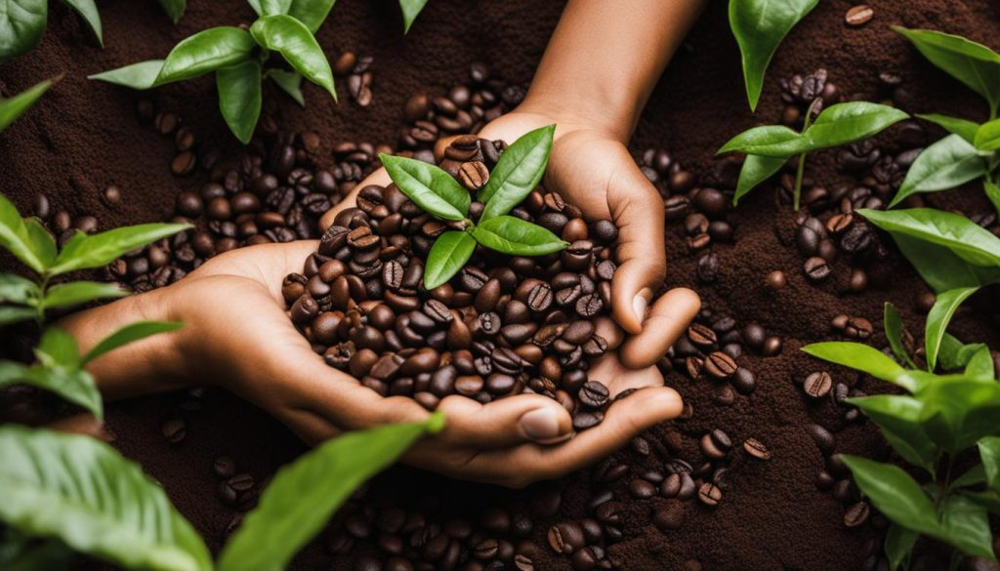

At the heart of every cup is a story — of farmers, roasters, and passion. We carefully source our beans from ethical farms that value sustainability and fairness. Each roast is tested and tasted until it meets our standards of richness and depth. We believe coffee should feel like a warm conversation, honest and full of care.
Great coffee begins with great responsibility. From the farms we partner with to the cups we serve, we’re committed to making choices that care for the planet. We work directly with growers who follow ethical and sustainable practices, ensuring quality in every bean and fairness in every step. Because making a difference matters — one cup at a time.
Thank you for being a part of our journey. Whether you're here for a quiet cup of coffee, to connect with friends, or simply to pause and breathe — we’re grateful to serve you. Every visit means the world to us. Here's to many more shared moments, warm mugs, and stories brewed with care.